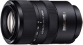

器材库 > 35mm画幅AF变焦镜头 > 70-300/4.5-5.6 G SSM II

详细规格
发布日期
2014-11-20
厂家推荐价格
142,000.00 （日元）
焦距
70mm-300mm
最大光圈
f/4.5-5.6
镜头结构
16片/11组
低/超低色散镜片
1片
最近对焦距离
120cm
最大放大倍率
0.25倍
驱动马达
SSM
滤镜口径
62mm
镜头卡口
Minolta/Konica-Minolta/Sony AF
防抖
否
颜色
黑色
尺寸
82.5×135.5mm
重量
750g
该产品暂无存档的网友点评